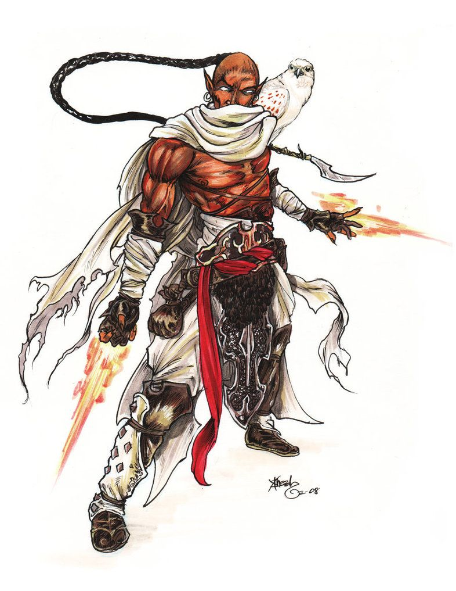

瑟芬人因为他们的灵活的身手，无与伦比的爆发速度，无人可比的对于移动和距离的掌握以及他们的幽默感而闻名。瑟芬人也赞美他们在贸易中出名的优美的狡猾。他们的国度在遥远的东方，隐藏在那除了几片由灵能照耀的森林之外永远都处于黑暗中的峡谷裂缝里 。 虽然他们的环境缺少日光，瑟芬人依旧茁壮地成长着。
性格：瑟芬人很喜欢欢笑和各种玩笑，也欢迎陌生人，并且对于那些赢得他们信任的人特别宽宏大量。如果他们被一个朋友背叛了他们会像矮人一样决心寻找公正和补偿。瑟芬人喜爱精美的雕塑，美丽的油画，华丽的服饰以及其他艺术品。他们不喜欢插手争斗，尽量避免战斗。不过当为自己而战的时候他们不会有任何胆怯。
生理描述：瑟芬人站立时大约5-1/2 英尺高，苗条而优美，通常重约140 磅。男性通常比女性更高更重。瑟芬人的皮肤一般是棕色的，眼睛是深色的。他们的头发一般是黑色的直发，有些人会把他们的头发用发夹夹起来，而另一些则喜欢把头发剃掉仅仅留下编成长辫子的顶髻。
关系：瑟芬人和人类，半精灵以及半身人相处得很好。他们觉得精灵太过于完美了而 不真实，他们常常带着怀疑的眼光看待半兽人和半巨人。瑟芬人和美纳德人常常因为误解而发生摩擦。瑟芬人觉得美纳德人过于僵硬了(很少意识到为什么)，而美纳德人则嫉妒瑟芬人的自由以及轻松的态度。
阵营：瑟芬人趋向于善良。那些选择成为魂刃者的会学着守序，不过这个种族大体上 来说趋向于混乱。
瑟芬的国度：瑟芬的国度在穿过广阔的大草原的东方，在一片黑暗笼罩的巨大峡谷的裂缝中。他们在那辉煌的闪耀着光芒的森林的分支中歌唱和磨练他们的艺术。另一些种族 的人也被欢迎进入森林，不过一些古老的神庙只对拥有瑟芬血脉的人开放。瑟芬人拥有的财产体现了他们的艺术倾向以及他们希望远行和其他文明交易各种艺术品的渴望。有些人喜欢能长途跋涉的大篷车，有些人喜欢能出海航行的船只。
宗教：瑟芬的主神是Fharlanghn，地平线居者。他是旅行，道路，距离和地平线的神， 所有这些都被深刻在瑟芬人的灵魂中。
语言：瑟芬人有自己的语言，不过字母表和通用语一样。有一些也学习木族语，那些 森林中游荡生物的语言。
姓名：瑟芬人在四岁生日时由他的父母授予名字。许多瑟芬名在一代代瑟芬人中不断 被使用。经常旅行的瑟芬人会把他出生城市的名字当作姓以此提醒他们人生旅程的起点是 从哪里开始的。
冒险：一个瑟芬人冒险者往往仅仅被外出旅行或者探险的想法而激发。或者也可能是 因为渴望见一见新的奇迹，有力的技术，异能或者魔法这些能够让他们的艺术工作更加完美的事物而冒险。